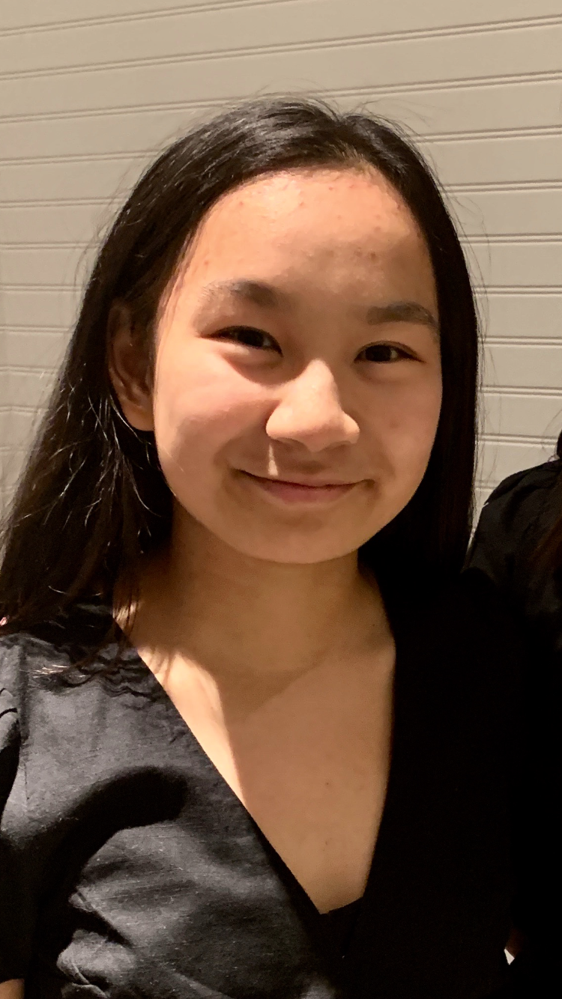

Hi, my name is Kylie. Simply put, I am an all-around
artist based in Delaware. I primarily focus on graphic design and photography, but I have also created pieces of art in pottery, photography, glass fusing, embroidery, printmaking, and more. Currently, I am a student at Cab Calloway School of the Arts. I major in Communication Arts, but specialize in digital media. I know how to work in HTML5, CSS3, Adobe Photoshop, Adobe InDesign, and Adobe Illustrator. My favorite forms of digital art are filmmaking, photography, vector drawing and digital painting. I most enjoy creating logos, posters, collages, and taking photos. I also like to create artwork in the traditional forms of visual arts such as drawing and painting.